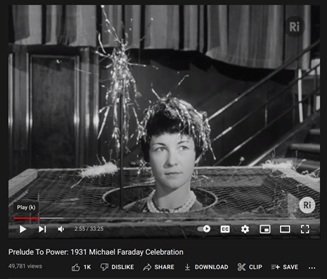

In this article we review the basic properties of Faraday cages.
We were brought to this subject reviewing Professor A.K.T. Assis’ book with J.A. Hernandes “The Electric Force of a Current”. Assis remarks that Faraday cages have surprising properties which are elementary, but not well known. Moreover the authors of [ “Mathematics of the Faraday cage.” Siam Review 57.3 (2015): 398-417] were surprised to find no readily available references or mathematical explanations of Faraday’s cage. This was the beginning of our investigation.
Hollow Conductors
In this article \(C\) denotes a conductive body in \(R^3\). This means \(C\) has a boundary surface \(S = \partial C\), and has a complement \(R^3 - C\). We say \(C\) is hollow if \(C\) divides \(R^3\) into “inside” and “outside” volumes, i.e. if \(R^3-C\) consists of two connected components. In our examples \(C\) will be a hollow spherical shell. The width of the shell is thin. By contrast we might otherwise have a solid spherical ball, and in this case the conductor is solid.
To say the body \(C\) is a conductor means the shell consists of metal or aluminum, something with abundance of free mobile electrons. By contrast an insulator is made of glass, or ceramic porcelain, or rubber, or oil and plastics.
In the setting of Faraday cages, we have a hollow conducting body \(C\). Topologically this means \(C\) divides the ambient space \({\bf{R}}^3\) into two volumes \({\bf{R}}^3 - C = V_i \coprod V_o\). We consider \(V_i, V_o\) as the inner and outer volumes bounded by \(C\). The coproduct symbol “\(\coprod\)” emphasizes that the volumes \(V_i\), \(V_o\) are disjoint. For a hollow conductor \(C\), the boundary intersections \(\partial V_i\) and \(\partial V_o\) are disjoint and also partition the topological boundary \(S=\partial C\) of the conductor. For example a hollow sphere has two boundary components, namely the inner and outer surfaces, which are disjoint and bound the inner and outer volumes.
With Faraday cages we consider a hollow conductor \(C\) and study the presence or absence of electrical forces in the interior volume. The basic question motivating Faraday cages is this:
- “If \(C\) is a hollow conductor and \(F_{ext}\) is an external electric force originating from the exterior volume, then what is the net electric force on the interior volume \(V_i\)?”
Actually we will see many Faraday cages are bird cages, being not hollow and having no well-defined topological interior or exterior, i.e. the bird cage does not divide \(R^3\) into two volumes! In these cases the Faraday shielding effect is informally(!) phrased as:
- “If \(C\) is a bird cage conductor (not hollow) and \(F_{ext}\) is an electric force originating from an external source, then what is the net electric force inside the bird cage?”
We should remark that bird cages have no interor or exterior, unless you’re a bird who can’t fit through the grates. From the bird’s point of view, the cage divides space into two volumes which are disjoint and inaccesible.

Therefore we do not deny the apparent shielding effects. But we think there is yet no satisfactory derivation. Historically there are two opposing viewpoints. First we have the standard Faraday-Maxwell viewpoint that conductors have a “shielding effect” and the electric field vanishes within the interior of \(V_i\) in the above setting. Second we have the nonstandard viewpoint of Weber-Kirchoff that the electric field is nonzero on the interior of \(V_i\). Both claims cannot be correct.
Poisson’s Theorem and Surface Charge Distributions:
We begin with Poisson’s fundamental theorem on electrostatics (1812).
- “When arbitrary electric forces act upon a conductor of arbitrary form from the outside, a distribution of free electricity on the surface of the conductor is always possible – but only one of them – for which the electric forces that originate from that distribution of free electricity will likewise be in equilibrium with the electric forces at all points of the interior of the conductor that act from the outside.” [Quoted from Weber, s 13.29].
Notice the topological expressions e.g. “from the outside”, “on the surface”, “of the interior”. In practice the “inside of \(C\)” and the “interior volume bounded by \(C\)” are frequently confused, especially in the case when the conductor \(C\) is a thin volume, e.g. thin hollow spherical shell \("O"\).
Here’s the formal statement of Poisson’s theorem:
- “Given a conducting body \(C\), and a net external force \(F_{ext}\) acting on \(C\), then there exists a unique surface charge distribution \(\sigma\) on the boundary surface \(\partial C\) such that \[F_{ext}(x)+F_\sigma(x) =0~~\text{for every}~~x\in C."\]
The key point is that the force throughout the volume of the body is balanced by a charge distribution supported only on the boundary surface \(S=\partial C\).
[Comment about surface charge distributions and normal derivative] The surface charge \(\sigma\) is obtained via the normal derivative of the potential \(\phi\) along the boundary, namely \(\frac{\partial \phi}{\partial n}\), which is by definition equal to \(\nabla \phi \cdot {\bf{n}}~ dS\) where \(\bf{n}\) is the “outer” normal of the surface.
Poisson claims the net force \(F_{net}(x)=0\) vanishes for \(x\in C\) everywhere inside the conductor. However the Faraday-Maxwell shielding effect asserts that \(F_{net}(x)=0\) everywhere in the inner volume \(x\in V_i\). We argue with Weber. et al, that indeed \(F_{net}\) is nonzero in \(V_i\)!
Proof of Poisson’s Theorem: [Incomplete] [Green-Thompson Energy Argument?]
Method of Images
What are we saying, that Faraday cages don’t work? That you shouldn’t put your face next to the microwave? No, well maybe.
[Method of images: Review!] Here is the basic example: suppose the conductor \(C\) is the lower halfspace \(\{(x,y)~|~y\leq 0\}\). Suppose an electric point charge \(+q\) is placed external to \(C\), i.e. somewhere on the vertical half line \(y>0\). Then Poisson’s theorem says there exists a surface distibution on \(C\) which balances the net force of the charge \(+q\). Here we argue by the method of images. The test charge \(+q\) induces a charge in the conductor equivalent to the field generated by an image charge \(-q_i\). The net electric potential is therefore the sum of the potentials generated by these point sources \(+q\) and \(-q_i\), and the electric field is the sum of the electric fields generated by the sources \(+q, -q_i\). In this example we see the boundary surface \(\partial C\) is an equipotential surface.
Remark. The argument is usually erroneously made via Gauss’ law. The error is supposing that a vanishing charge density implies a vanishing electric field. This is false! Gauss’ law relates the divergence of the electric field to the charge density \(\rho\). But vanishing divergence \(div(\nabla \phi)\)=0$ of course does not imply a vanishing gradient \(\nabla \phi\). [See links below].
“But What About Experiments?”
But what about all the experiments? A google search gives twenty links on how to make your own Faraday cage in five minutes for five dollars. We argue that there is an apparent shielding effect, yet this shielding effect is unexplained hitherto.
For example it’s recorded that Faraday built a room in 1836 coated with metal foil (specific metal unknown) and could not detect any electrical forces inside the room neither near it’s walls. But what is the explanation?
It’s interesting that many applications of Faraday cages involve bird cage designs, where the conductor \(C\) actually does not topologically divide the space into inner and outer volumes. In applications the following heuristic is introduced: that the cage only shields radiation which is too large to impinge and pass through the “grates”. This does not really follow from the usual arguments and involves new implicit hypotheses.


“How to derive Faraday cage properties from Maxwell equations?”.
“How is electric field inside hollow conducting sphere zero?”
There’s alot of different answers, but always ending with a nonexplanation, simply the claim that the resultant electric fields cancel to zero. Similarly there is repeated erroneous argument based on Gauss’ law. But again we must emphasize that the vanishing charge density does not imply a vanishing electric field! This is elementary mistake repeated again and again.
Prof. Lewin’s Experiment
Prof. Lewin’s experiment does not seem convincing. He has a conductive ping pong. Are we expected to believe that if his pingpong touches the positively charged surface, then this positive charge will be imparted to the pingpong rod, and eventually ? This is only if the positive charges are mobile and attracted to the rod.
He touches one side of the box and it’s negatively charged. He touches the other side of the box, and he sees that it’s positively charged. (He’s collecting these charges using the condutive ping pong, then discharging at an electrometer to see the polarity, positive or negative charge). But then Prof. Lewin places the pingpong in the volume bounded by the conductor can, and he moves the ping pong around and seems to indicate that he collects no free electric charges. The absence of charges is shown by the electrometer registering no charge. But what does this show? Not that there is zero net force in the interior, but rather that there are no free electrons!
Is this fair critique? There are no mobile positive ions which are collected by the pingpong and then deposited. Rather there’s only mobile electrons. On the negative side, there is an excess of electrons which are possibly attracted to the pingpong. On the positive side there is an absence of electrons. When the pingpong conductor is placed in physical contact with the box, there is a flow of electrons from the pingpong conductor to the box.